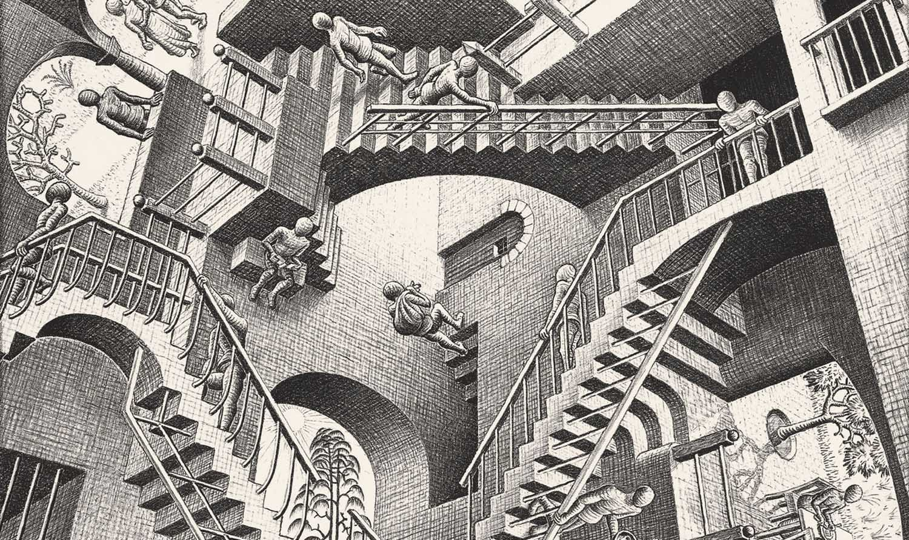
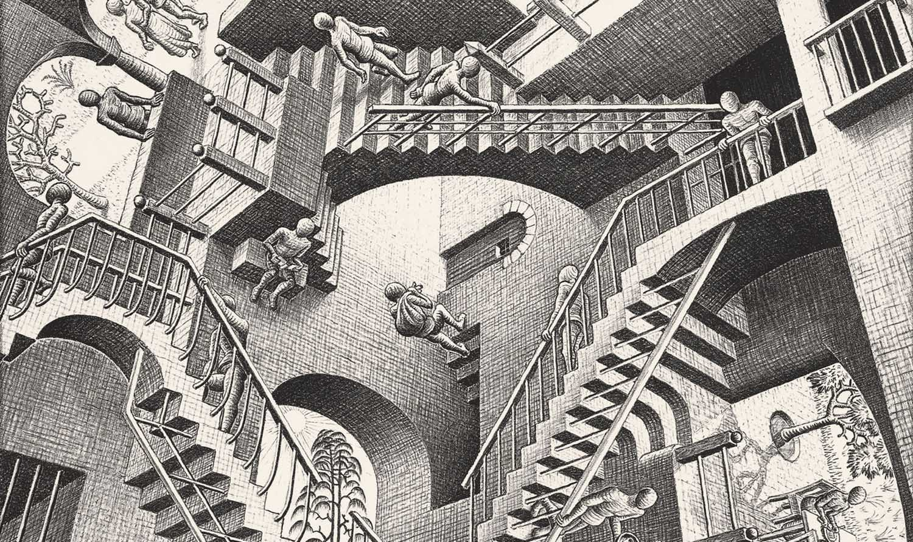

Planteamiento problema

Antiguas Tecnologias

Nuevas Tecnologias

BiografíaMaurits Cornelis Escher es el maestro de las figuras imposibles, las ilusiones ópticas y los mundos imaginarios. Siempre interesado por representar con tridimensionalidad espacios paradójicos que desafían a los modos tradicionales de representación, se podría decir que abrazó el relativismo de su época. El mundo es mucho más de lo que se nos presenta ante el ojo, como bien sabían los artistas, literatos, intelectuales y científicos de la época. El mundo es inquietantemente relativo.Por supuesto estudió arquitectura pero lo que le interesaba era la técnica de grabado en madera, la cual llegó a dominar con maestría. Su interés por las relaciones entre figura y fondo se consolida en sus viajes a Granada, donde conoce la Alhambra y sus motivos ornamentales. Ahí empezaría su característico uso de patrones que rellenan el espacio sin dejar huecos, o mejor dicho, cuyos huecos forman a su vez otras figuras.M. C. Escher es un artista difícil de clasificar. Desde aquí, muy ingenuamente lo clasificamos dentro del Op-art, pero sin duda este movimiento (posterior a él) no representa el conjunto de su trabajo. A veces sencillo, a veces conceptual, a veces con mensaje o a veces sin él, su trabajo se basó en soluciones a problemas, juegos visuales y muy elaborados guiños al espectador, que a veces rozan lo onírico, lo abstracto y lo conceptual.Le gustaba el blanco y negro, la simetría, lo infinito y lo limitado, las metamorfosis en las figuras… El espacio es el protagonista en sus cuadros, ya sea por su estructura, su superficie o su proyección en un plano como espacio tridimensional. Sea como sea, sus ilustraciones son uno de los ejemplos más interesantes del estudio del espacio y la psicología del arte en la historia. |
|

Planteamiento problema |
Antiguas Tecnologias |
Nuevas Tecnologias |
Opinión |